Connect your car
ParkSG starts your parking timer when your iPhone disconnects from your car's Bluetooth, and ends it when it connects again. You set this up once in Apple's Shortcuts app with two automations. It takes about two minutes.
- Your iPhone is already paired with your car's Bluetooth (the car shows up in Settings › Bluetooth).
- ParkSG is installed and you have opened it once.
- The Shortcuts app is on your iPhone. If you removed it, get it again from the App Store.
Screens are from iOS 27. On older versions the wording differs slightly; see the notes at the end.
The short version
Add "Car disconnected (I parked)" Add "Car Connect"
- On your iPhone, tap each link above and tap Add Shortcut. Each one brings its automation with it, switched off.
- In Shortcuts, tap Automation. Tap each of the two, tap Edit, tap Any Device and pick your car. Go back and switch it on.
- Tap each of the two shortcuts once to run it and choose Allow. iOS asks only this first time.
Pick your car before switching them on. Left on Any Device, they would also run when headphones connect or disconnect.
Step by step with pictures
1. Add the two shortcuts
Add "Car disconnected (I parked)" Add "Car Connect"
Tap each link, then Add Shortcut
Open this page on your iPhone. Each link opens the Shortcuts app.
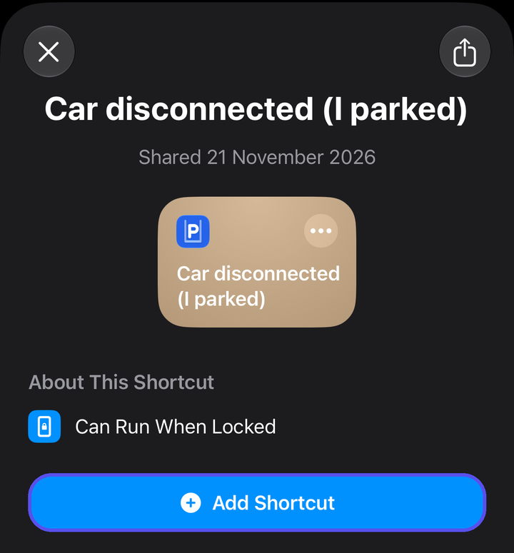
2. Point them at your car and switch on
Open Automation
In Shortcuts, go back to Library and tap Automation.
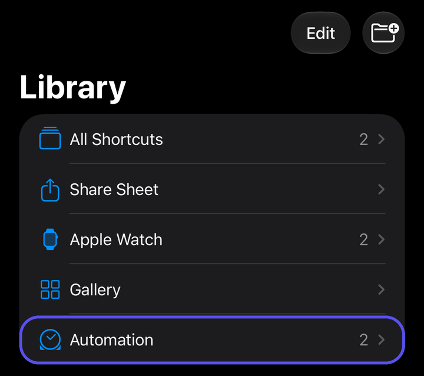
Both automations are there, switched off
They are set to Any Device until you pick your car.
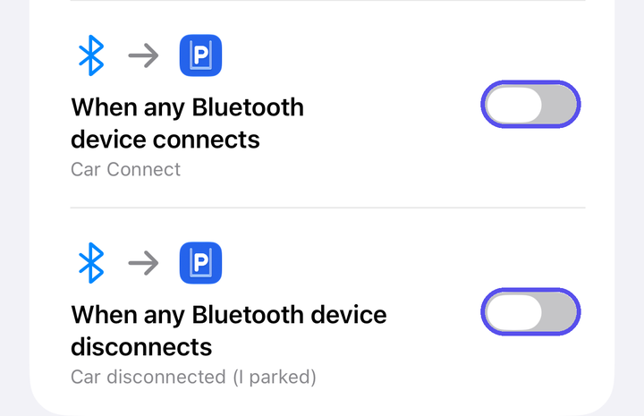
Tap one, then Edit
If you see "Describe a Shortcut", tap Edit at the top right.
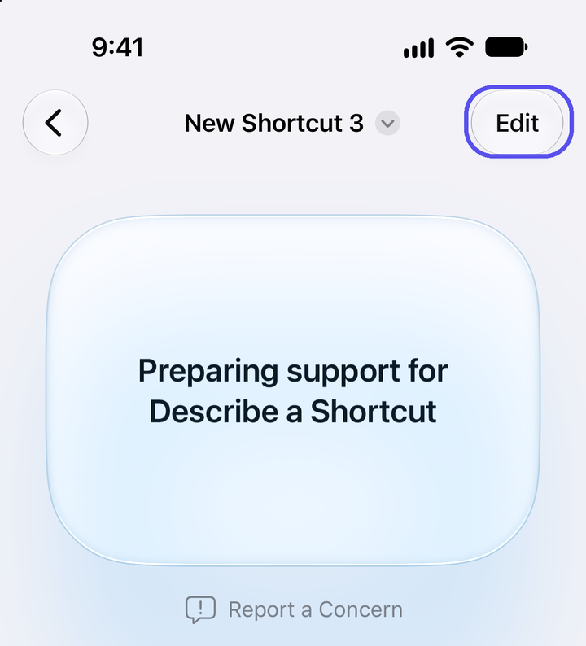
Pick your own car
Tap Any Device, pick your car from the list, then tap the blue tick.

Leave Confirm Before Run off
Tap the small arrow to check. Automation should be on and Confirm Before Run off, so it runs by itself.
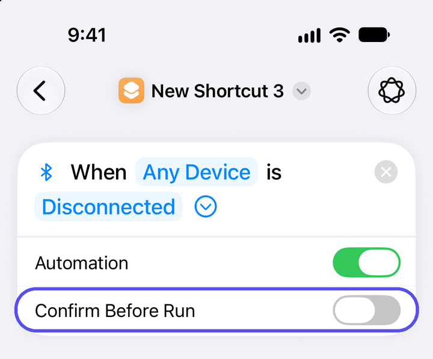
Do the same for the other one
Go back. Both automations should now be switched on.
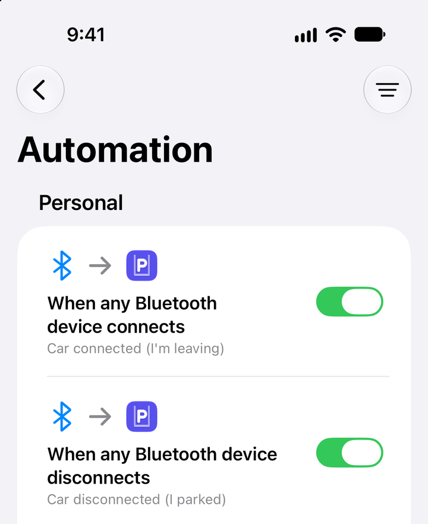
3. Allow them once
Run each shortcut once
In All Shortcuts, tap each of the two tiles. iOS asks its permission questions only on the first run. Answer them now, or the automation stops to ask while you are walking away from the car.

Allow location for the parked one
Choose Allow While Using App. This is the Shortcuts app's permission, not ParkSG's.
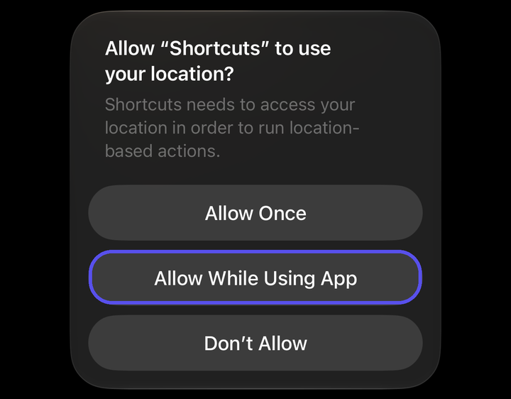
Allow both to run ParkSG's actions
Tap Allow. If the test run starts a parking card, tap Not parked.
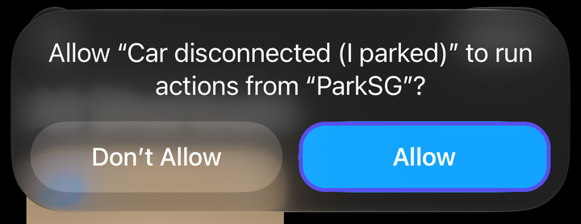
Or make them by hand, without the links
Open Automation and tap +
In Shortcuts, tap Automation, then + at the bottom.
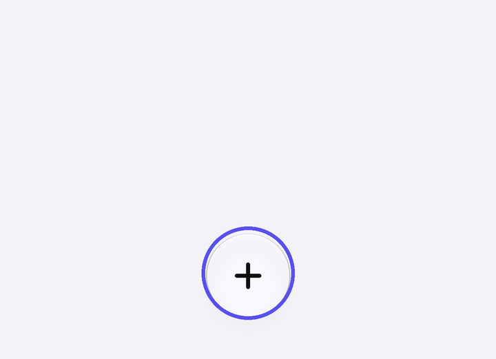
Tap Edit
If you see "Describe a Shortcut", tap Edit.
Choose Bluetooth
Tap the Automation chip under Search, then Bluetooth.

Pick your car
Tap Any Device, pick your car, then tap the blue tick.
Change Connected to Disconnected
Tap Connected and choose Disconnected.
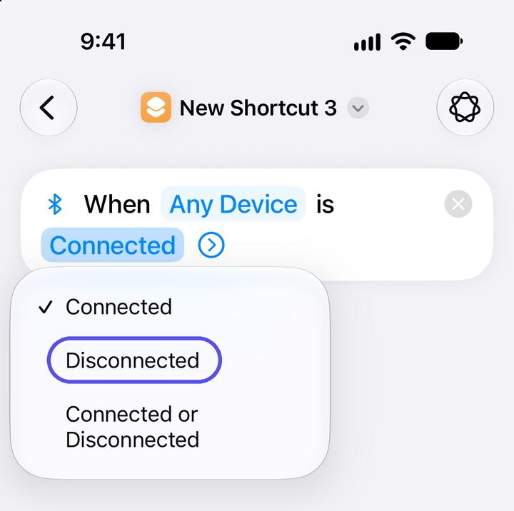
Leave Confirm Before Run off
Tap the small arrow to check that Automation is on and Confirm Before Run is off.
Add the ParkSG action
In Search, type ParkSG and choose "Car disconnected (I parked)". Tap Location on it and choose Current Location.

Save, then make the second one
Tap back to save. Make a second automation the same way, left on Connected, with "Car connected (I'm leaving)".
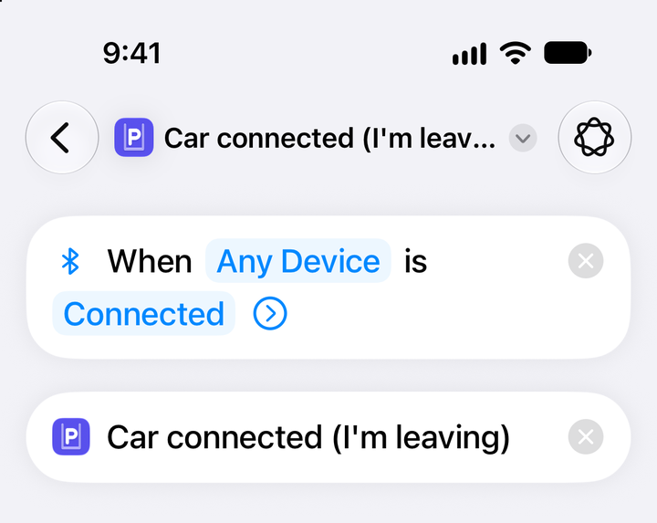
In ParkSG, open Settings. Car automation shows when each automation last ran.
If it doesn't run
- A Shortcuts banner appears every time. Open the automation and tap the arrow next to Connected or Disconnected. If there is a Notify When Run switch, turn it off.
- Shortcuts asks before running. Open the automation, tap the arrow next to Connected or Disconnected, and turn off Confirm Before Run.
- Nothing happens. Check both switches in the Automation list are green, that each is set to your own car, and that you ran each shortcut once and tapped Allow. In ParkSG, Settings › History shows what happened on each run.
- It starts when headphones disconnect. Open the automation, tap Any Device and pick only your car.
- Your car keeps Bluetooth on after the engine stops. Some cars hold the connection until you open the door or lock up. The timer starts then. You can adjust the start time on the parking card.
- Older iOS (17, 18, 26). Start from the Automation tab at the bottom of Shortcuts, tap +, choose Bluetooth, pick your car and "Is Disconnected", choose Run Immediately, then add the ParkSG action.
No car Bluetooth? You can still tap "I've parked here" on a carpark's page in ParkSG. To start the timer from when you drove in, set the From time on that page first.